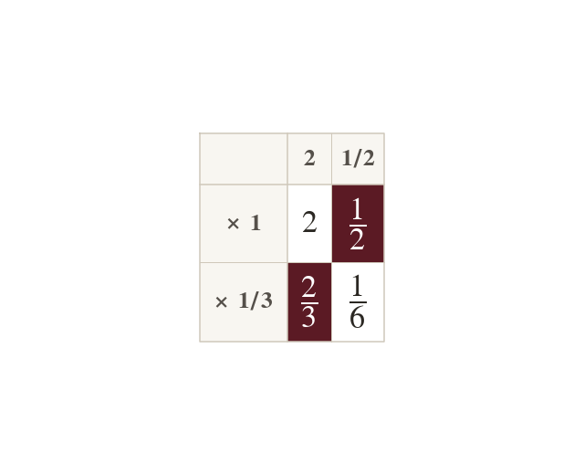
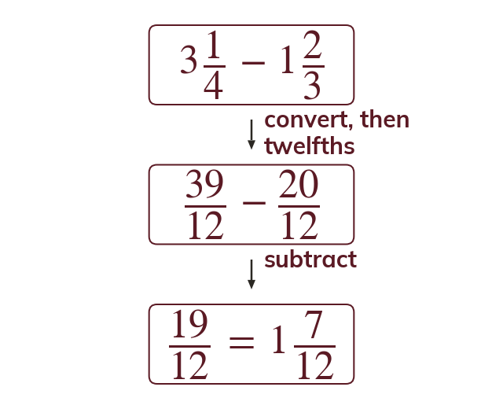
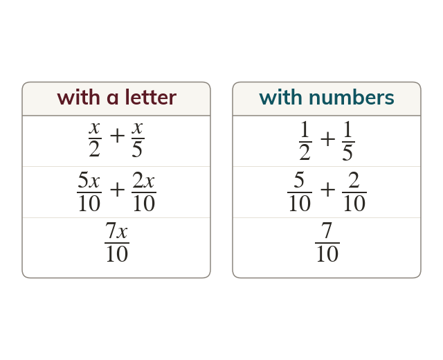
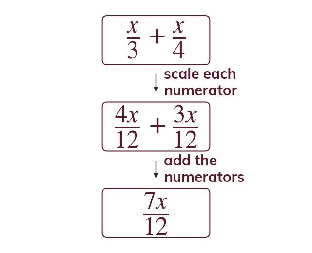

Convert before multiplying or dividing
Mixed numbers are made improper before multiplying or dividing. Multiplying the wholes and the parts separately misses two of the four products.
Recipes and timings rarely come in neat fractions: cups, hours. Today all four operations meet mixed numbers - and then a letter takes the numerator's place.
Work down the page at your own pace. Write every answer in your book first, then click to check it.
Read each card, then follow the worked examples one step at a time.

Mixed numbers are made improper before multiplying or dividing. Multiplying the wholes and the parts separately misses two of the four products.

Converting always works for adding and subtracting mixed numbers. The separate method needs care if a part would go below zero.
Pick an answer. If it's wrong, the feedback tells you which mistake it was.
Read each card, then follow the worked examples one step at a time.

Algebraic fractions with number denominators are added exactly like numerical fractions. The denominators are made common, then the numerators are added.

Scale each numerator by the number its denominator was multiplied by. The letter stays in the numerator.
Pick an answer. If it's wrong, the feedback tells you which mistake it was.
Finished? Next lesson: 7.10.7 Percentages of an Amount.
Log in, then search for a code to practise that skill.
Videos, worksheets and more on each part of this lesson.